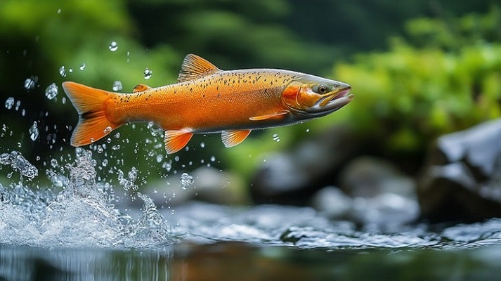
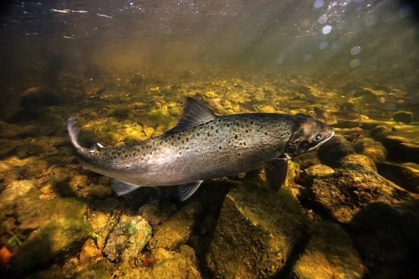
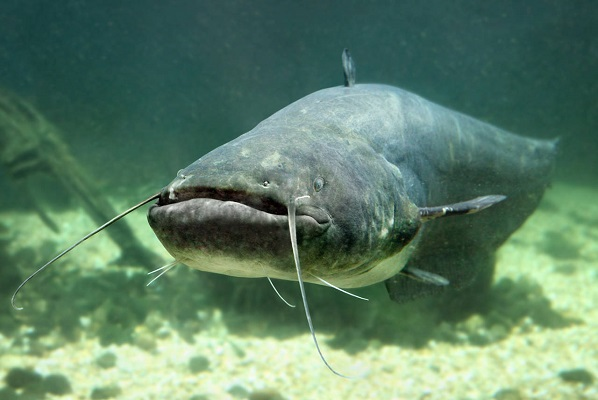

Découvrez la Beauté des Poissons de Rivières
Explorez différentes espèces et leurs habitats
Espèces de Poissons Vedettes

Truite Arc-en-ciel
Connue pour ses magnifiques couleurs et sa combativité.

Saumon Atlantique
Poisson migrateur majestueux au cycle de vie fascinant.

Silure Européen
L'une des plus grandes espèces de poissons d'eau douce d'Europe
À Propos du Monde des Poissons de Rivière
Bienvenue au Monde des Poissons de Rivière, votre destination privilégiée pour découvrir le monde fascinant des poissons d'eau douce. Notre mission est d'éduquer et d'inspirer l'appréciation de ces remarquables espèces aquatiques qui peuplent nos rivières et nos lacs.
Que vous soyez un passionné de pêche, un amoureux de la nature ou simplement curieux de la vie aquatique, nous proposons des informations complètes sur diverses espèces de poissons, leurs habitats et les efforts de conservation.
Pourquoi Choisir le Monde des Poissons de Rivière ?
- Informations expertes sur diverses espèces de poissons
- Photographies magnifiques et descriptions détaillées
- Sensibilisation à la conservation et éducation
- Mises à jour régulières sur la recherche en ichtyologie